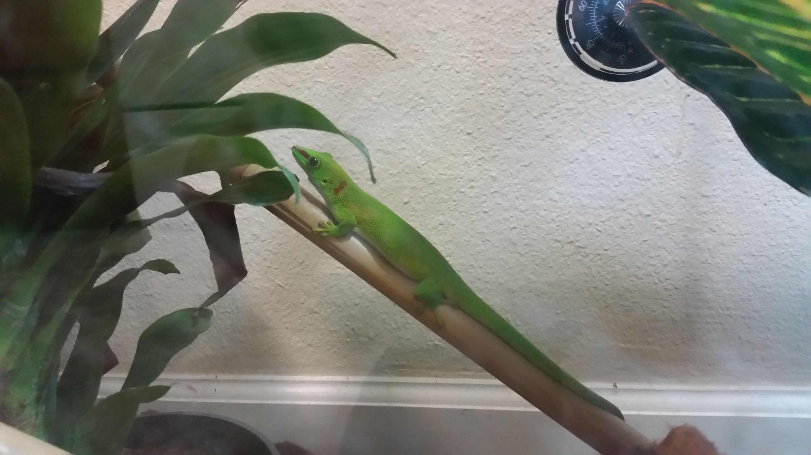
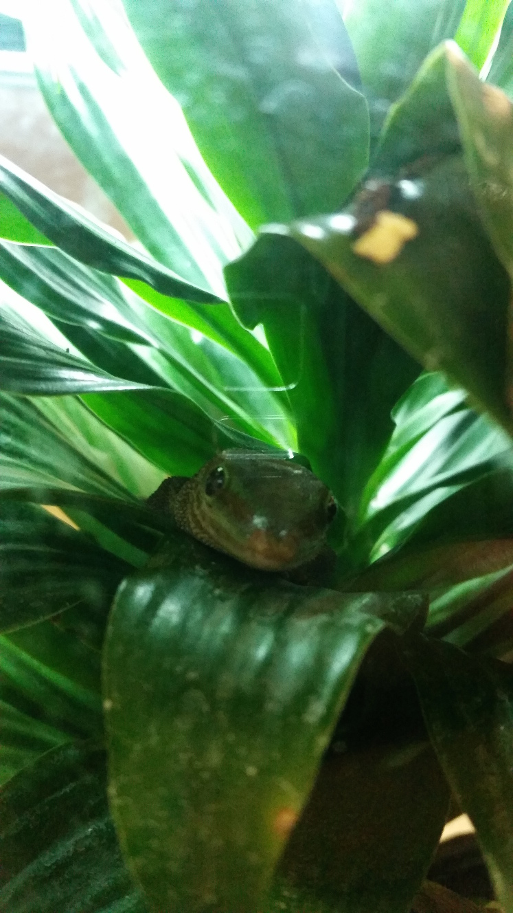

These two geckos are Madagascar Giant Day Geckos (Phelsuma madagascariensis grandis).
We mostly feed them crickets and powdered gecko food, but as a treat, we'll dab honey on our fingertips to let them lick it off. They're very good at that, so there's little to no honey residue afterwards.
If you're concerned, we keep them in a separate tank from Cinnamon.
She's a little brighter than her roommate, and can usually be found trying to bask in the light.

He seems to be a little more shy, and is generally found hidden in a plant.
